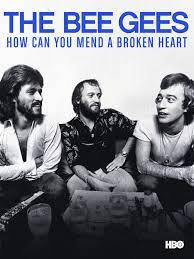
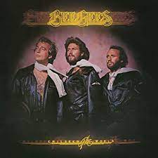
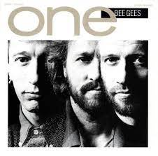
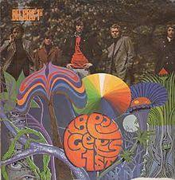
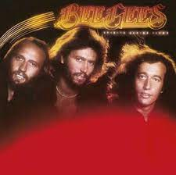
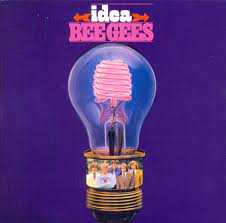

Bee Gees
Bee Gees foi uma banda de pop anglo-australiana formada na cidade de Brisbane, na Austrália, em 1958, pelos irmãos ingleses Barry, Robin e Maurice Gibb. Nascidos na Ilha de Man, viveram alguns anos em Manchester, Inglaterra e ainda crianças mudaram-se com os pais para Queensland, na Austrália. Fizeram sucesso desde 1966 até o início da década de 2010, estando entre os maiores vendedores de discos de todos os tempos.
Passaram por diversos ritmos musicais, do rock psicodélico às baladas, passando pelo country rock, disco, R&B, música romântica, terminando no pop rock moderno, tendo vendido aproximadamente 220 milhões de discos. Foram incluídos no Hall da Fama dos Grupos Vocais, no Hall da Fama do Rock and Roll, no Hall da Fama dos Compositores e ganharam dez prêmios Grammy.
Opinião pessoal: uma de minhas bandas favoritas, pelo estilo de música, mas o principal seria: o ritmo, as letras e o fato de mesmo escutando-os o dia INTEIRO buscando inspiração para fazer este HTML, eu não me cansei e ainda queria mais.
Top 10 músicas
-

Staying Alive
Álbum: How Can You Mend A Broken Heart -
How Deep Is Your Love
Álbum: How Can You Mend A Broken Heart -
More Than A Woman
Álbum: How Can You Mend A Broken Heart -
Night Fever
Álbum: How Can You Mend A Broken Heart -

You Should Be Dancing
Álbum: Children Of The World -

Wish You Were Here
Álbum: One -

To Love Somebody
Álbum: Bee Gees' 1st -

Too Much Heaven
Álbum: Spirits Having Flown -

I Started A Joke
Álbum: Idea -
Tragedy
Álbum: Spirits Having Flown
Curiosidade: O Hall da Fama do Rock and Roll diz em uma citação: "Somente Elvis Presley, The Beatles, Michael Jackson e Paul McCartney superam os Bee Gees em recordes e vendas".